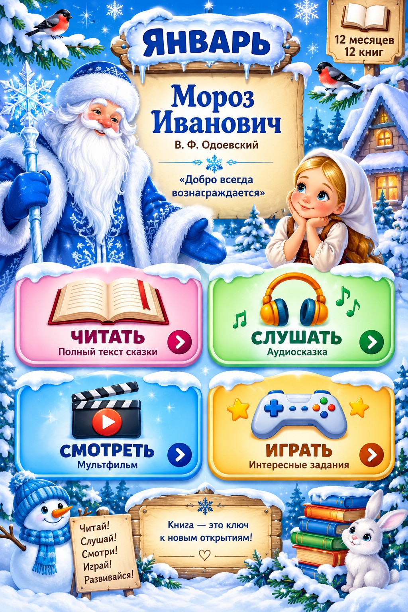

Читать
Слушать
Смотреть
Играть
⌂ На главную
📖 Читать
❄ ЯНВАРЬ ❄
Мороз Иванович
В. Ф. Одоевский
← Предыдущая
Следующая →
☰ Содержание
← На главную
🎧 Слушать
Аудиосказка
▶ Открыть аудиосказку
← На главную
🎬 Смотреть
Мультфильм
▶ Смотреть мультфильм
← На главную
🎮 Играть
Кто был трудолюбивым?
Рукодельница
Ленивица
Что уронила Рукодельница?
Клубок
Ведёрко
Книгу